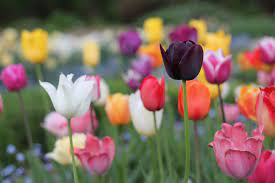

Variety of flowers
Home
Contact
Posts
Blog
Search
Nature smiles through flowers.
Marigold
Tagetes is a genus of annual or perennial, mostly herbaceous plants in the family Asteraceae. They are among several groups of plants known in English as marigolds. The genus Tagetes was described by Carl Linnaeus in 1753
Lily

Lilium is a genus of herbaceous flowering plants growing from bulbs, all with large prominent flowers. They are the true lilies. Lilies are a group of flowering plants which are important in culture and literature in much of the world
Hibiscus
Hibiscus is a genus of flowering plants in the mallow family, Malvaceae. The genus is quite large, comprising several hundred species that are native to warm temperate, subtropical and tropical regions throughout the world.
Sunflower
Helianthus is a genus comprising about 70 species of annual and perennial flowering plants in the daisy family Asteraceae commonly known as sunflowers. Except for three South American species, the species of Helianthus are native to North America and Central America
Tulip

Tulips are a genus of spring-blooming perennial herbaceous bulbiferous geophytes. The flowers are usually large, showy and brightly coloured, generally red, pink, yellow, or white. They often have a different coloured blotch at the base of the tepals, internally